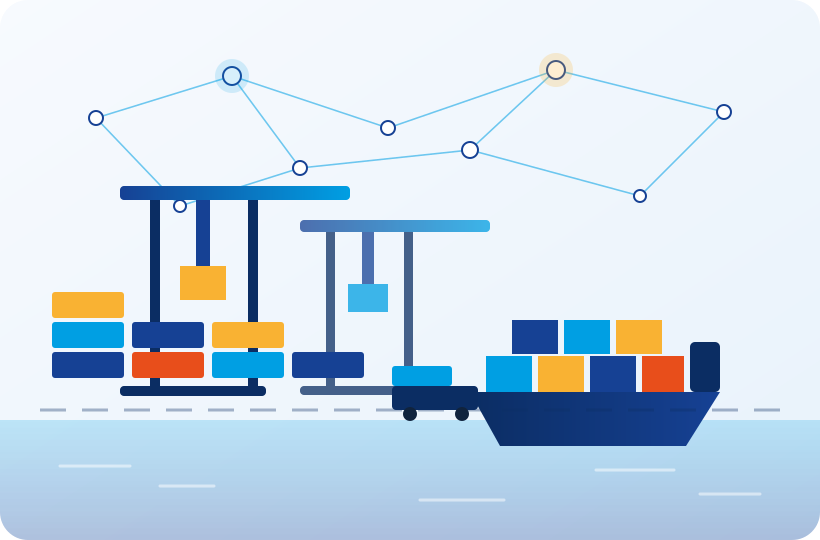

Empowering the next generation of port talent.
Your students run real trade, transport and port operations in a living digital port community: simulated companies, a live document flow and a real ERP.
QuotationAccepted
BookingConfirmed with the carrier
Commercial invoiceMismatch detected
Customs declarationWaiting for the corrected invoice
CMR & deliveryNext
PVL.ONE in figures
Source: PVL figures, as of November 2026. Satisfaction score from participant surveys. Powered by Escola Europea – Intermodal Transport · ISO 9001:2015 certified.
Institutions using PVL
Ports cannot afford
to ignore it
Every year, thousands of logistics professionals enter the workforce without real operational experience. Theoretical knowledge alone does not prepare them for the complexity of modern intermodal supply chains.
Theoretical training dominates
Most programmes rely on classroom-only instruction, with no simulation of real document flows, ERP systems or operational decision chains.
No exposure before employment
Graduates lack experience of quotations, customs documentation, freight negotiation and stakeholder coordination until they are already on the job.

Students are active participants in
their own learning
Constructivist learning is student-centred, built on discovery and inquiry. Instructors facilitate rather than lecture, which is what turns a class into an operation. We believe the tools of the sector should be open to the people learning it.
One operation, end to end
The path every team follows, repeated in each transport module.
- 01QuotationThe commercial offer
- 02Export shipmentOpened in Click & Cargo
- 03DocumentsTransport order, customs, B/L
- 04SendPre-alert to the counterpart
- 05Import shipmentReceived and checked
- 06BillingThe file is closed

Transforming logistics training with immersive simulations
Watch on YouTube ↗ — the video plays here once you accept cookies.
“You have been selected to play a key role as a Freight Forwarder, representing a Port Community Team. Your role is crucial in ensuring the smooth transportation of goods from one place to another: coordinating with carriers, handling documentation and ensuring compliance with all necessary regulations.”
This is what a participant reads when a simulation begins. From there on, every decision is theirs.
See a module inside the Training Hub ↗One integrated
experience
Each module replicates a specific sector of the port-logistics chain, activated on its own or combined into a fully intermodal journey.
Maritime
Sea freight, port operations, vessel scheduling and containerisation.
AIR↗AirfreightAirfreight
Time-sensitive cargo, AWB, packaging and IATA documentation.
RWY↗RailwayRailway
Intermodal rail, EU corridors and SDG railway operations.
HAU↗HaulierHaulier
Last-mile transport, CMR, dispatch and terminal coordination.
INL↗Inland NavigationInland Navigation
River transport, barge operations, cargo handling and terminals.
CUS↗CustomsCustoms
Clearance, documentation control, tariff management and border coordination.
INS↗InsuranceInsurance
Cargo insurance, risk assessment, claims handling and policy coordination.
NEG↗NegotiationNegotiation
Deal negotiation, persuasive offers, case-study simulation and final evaluation.
BMB↗BOMB DashboardBOMB Dashboard
Business decisions under pressure: incidents, disruption and KPI analysis.
Pick the level
of commitment
From a three-hour event to a full year of self-managed institutional access. Every format is quoted on request.
Flash
A gamified session for conferences and events. Teams of two to four run one operation from end to end.
What Flash includes ↗PVL Immersion Course
The established programme, tailored to your institution, with all materials and ERP access.
What the course includes ↗Open Lab
Your own delegation, your own simulations, with technical support behind you.
What Open Lab includes ↗Three doors,
one platform
Institutions
Training centres, VET schools, universities and business schools bringing real operations into a programme.
See what fits your centre ↗Trainers
Teachers and programme coordinators who want the method, the platform skills and a network of peers.
The CHIRON Programme ↗Ports
Port authorities and communities training their own people, and shaping what comes next.
For port communities ↗Institutions in 11 countries
Training centres, universities and professional schools from the Mediterranean to West Africa and the Gulf.
“I consider that it has been a very useful activity because we have been able to apply the concepts acquired throughout the master’s.”
Anna B. · Participant“I would have liked it to be longer as I felt that there was a lot of information in a short time, but overall I liked it a lot and I feel that it added value.”
Linda B. · Participant“Excellent experience! Good order and great result! Thank you!”
Santiago O. · ParticipantThe ecosystem is expanding: Port Virtual World and new tools are coming, built with port communities.
Bring PVL.ONE to your students
A one-hour demo with your programme and your learners on the table. If an hour is too much right now, start with a free Training of Trainers instead.
international@escolaeuropea.eu · (+34) 93 298 6070